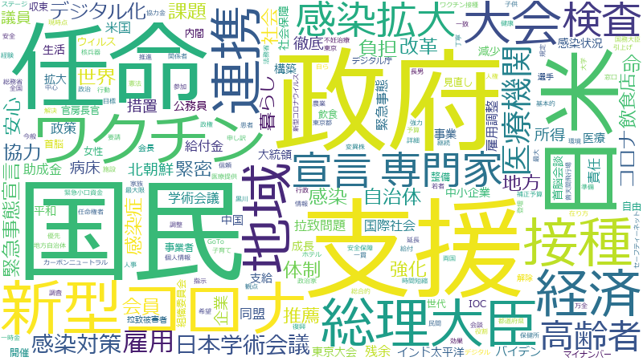

菅義偉

政府 、支援 、国民 、地域 、連携 、新型コロナ 、経済 、任命 、総理大臣 、課題 、協力 、ワクチン 、体制 、専門家 、負担 、自治体 、日米 、感染症 、地方 、感染拡大 、世界 、検査 、宣言 、接種 、強化 、コロナ 、社会 、安心 、雇用 、高齢者 、措置 、企業 、感染 、事業 、政策 、改革 、医療機関 、デジタル化 、命 、拡大 、議員 、責任 、大会 、徹底 、整備 、緊急事態宣言 、生活 、構築 、減少 、感染対策 、中国 、環境 、観点 、事業者 、推進 、緊急事態 、暮らし 、ウィルス 、所得 、見直し 、緊密 、開催 、飲食店 、米国 、中心 、医療 、成長 、安全 、給付金 、効果 、会員 、基本的 、支給 、中小企業 、要請 、助成金 、自由 、予算 、施設 、調整 、関係者 、病床 、役割 、情報 、新型コロナウイルス 、準備 、規定 、調査 、雇用調整 、国際社会 、日本学術会議 、最大 、女性 、世代 、行政 、解決 、推薦 、丁寧 、解除 、全国
政府 、国民 、支援 、任命 、日米 、新型コロナ 、ワクチン 、総理大臣 、接種 、連携 、地域 、経済 、大会 、専門家 、感染拡大 、宣言 、検査 、高齢者 、医療機関 、雇用 、日本学術会議 、感染対策 、デジタル化 、自治体 、負担 、会員 、協力 、地方 、安心 、体制 、世界 、感染 、感染症 、課題 、命 、緊急事態宣言 、改革 、コロナ 、暮らし 、推薦 、緊密 、飲食店 、強化 、社会 、北朝鮮 、病床 、議員 、企業 、所得 、措置 、徹底 、拉致問題 、学術会議 、米国 、責任 、緊急事態 、国際社会 、政策 、雇用調整 、同盟 、残余 、助成金 、給付金 、インド太平洋 、成長 、中国 、事業 、バイデン 、感染状況 、拡大 、公務員 、減少 、支給 、東京大会 、大統領 、平和 、中小企業 、生活 、構築 、社会保障 、首脳会談 、医療 、ウィルス 、飲食 、内閣 、官房長官 、自由 、整備 、組織委員会 、収束 、首脳 、IOC 、事業者 、開催 、女性 、見直し 、世代 、デジタル庁 、解除 、マイナンバー
政府
| 言及回数 | 1004回 |
| 言及発言者数（参考人を含む） | 1333人 |
国民
| 言及回数 | 937回 |
| 言及発言者数（参考人を含む） | 1234人 |
支援
| 言及回数 | 946回 |
| 言及発言者数（参考人を含む） | 1362人 |
任命
| 言及回数 | 327回 |
| 言及発言者数（参考人を含む） | 272人 |
日米
| 言及回数 | 273回 |
| 言及発言者数（参考人を含む） | 334人 |
新型コロナ
| 言及回数 | 405回 |
| 言及発言者数（参考人を含む） | 937人 |
ワクチン
| 言及回数 | 291回 |
| 言及発言者数（参考人を含む） | 572人 |
総理大臣
| 言及回数 | 324回 |
| 言及発言者数（参考人を含む） | 763人 |
接種
| 言及回数 | 254回 |
| 言及発言者数（参考人を含む） | 457人 |
連携
| 言及回数 | 430回 |
| 言及発言者数（参考人を含む） | 1262人 |
地域
| 言及回数 | 441回 |
| 言及発言者数（参考人を含む） | 1313人 |
経済
| 言及回数 | 368回 |
| 言及発言者数（参考人を含む） | 1035人 |
大会
| 言及回数 | 189回 |
| 言及発言者数（参考人を含む） | 309人 |
専門家
| 言及回数 | 280回 |
| 言及発言者数（参考人を含む） | 777人 |
感染拡大
| 言及回数 | 258回 |
| 言及発言者数（参考人を含む） | 690人 |
宣言
| 言及回数 | 254回 |
| 言及発言者数（参考人を含む） | 684人 |
検査
| 言及回数 | 255回 |
| 言及発言者数（参考人を含む） | 722人 |
高齢者
| 言及回数 | 242回 |
| 言及発言者数（参考人を含む） | 657人 |
医療機関
| 言及回数 | 203回 |
| 言及発言者数（参考人を含む） | 485人 |
雇用
| 言及回数 | 245回 |
| 言及発言者数（参考人を含む） | 732人 |
日本学術会議
| 言及回数 | 120回 |
| 言及発言者数（参考人を含む） | 97人 |
感染対策
| 言及回数 | 164回 |
| 言及発言者数（参考人を含む） | 284人 |
デジタル化
| 言及回数 | 198回 |
| 言及発言者数（参考人を含む） | 488人 |
自治体
| 言及回数 | 274回 |
| 言及発言者数（参考人を含む） | 949人 |
負担
| 言及回数 | 279回 |
| 言及発言者数（参考人を含む） | 1000人 |
会員
| 言及回数 | 138回 |
| 言及発言者数（参考人を含む） | 207人 |
協力
| 言及回数 | 298回 |
| 言及発言者数（参考人を含む） | 1177人 |
地方
| 言及回数 | 260回 |
| 言及発言者数（参考人を含む） | 950人 |
安心
| 言及回数 | 247回 |
| 言及発言者数（参考人を含む） | 883人 |
体制
| 言及回数 | 290回 |
| 言及発言者数（参考人を含む） | 1152人 |
世界
| 言及回数 | 257回 |
| 言及発言者数（参考人を含む） | 969人 |
感染
| 言及回数 | 222回 |
| 言及発言者数（参考人を含む） | 762人 |
感染症
| 言及回数 | 268回 |
| 言及発言者数（参考人を含む） | 1067人 |
課題
| 言及回数 | 306回 |
| 言及発言者数（参考人を含む） | 1308人 |
命
| 言及回数 | 198回 |
| 言及発言者数（参考人を含む） | 615人 |
緊急事態宣言
| 言及回数 | 182回 |
| 言及発言者数（参考人を含む） | 510人 |
改革
| 言及回数 | 206回 |
| 言及発言者数（参考人を含む） | 692人 |
コロナ
| 言及回数 | 250回 |
| 言及発言者数（参考人を含む） | 992人 |
暮らし
| 言及回数 | 157回 |
| 言及発言者数（参考人を含む） | 429人 |
推薦
| 言及回数 | 116回 |
| 言及発言者数（参考人を含む） | 178人 |
緊密
| 言及回数 | 147回 |
| 言及発言者数（参考人を含む） | 376人 |
飲食店
| 言及回数 | 145回 |
| 言及発言者数（参考人を含む） | 370人 |
強化
| 言及回数 | 251回 |
| 言及発言者数（参考人を含む） | 1151人 |
社会
| 言及回数 | 248回 |
| 言及発言者数（参考人を含む） | 1144人 |
北朝鮮
| 言及回数 | 112回 |
| 言及発言者数（参考人を含む） | 205人 |
病床
| 言及回数 | 127回 |
| 言及発言者数（参考人を含む） | 304人 |
議員
| 言及回数 | 197回 |
| 言及発言者数（参考人を含む） | 852人 |
企業
| 言及回数 | 229回 |
| 言及発言者数（参考人を含む） | 1113人 |
所得
| 言及回数 | 153回 |
| 言及発言者数（参考人を含む） | 527人 |
措置
| 言及回数 | 239回 |
| 言及発言者数（参考人を含む） | 1206人 |
徹底
| 言及回数 | 183回 |
| 言及発言者数（参考人を含む） | 808人 |
拉致問題
| 言及回数 | 88回 |
| 言及発言者数（参考人を含む） | 110人 |
学術会議
| 言及回数 | 80回 |
| 言及発言者数（参考人を含む） | 76人 |
米国
| 言及回数 | 144回 |
| 言及発言者数（参考人を含む） | 501人 |
責任
| 言及回数 | 193回 |
| 言及発言者数（参考人を含む） | 922人 |
緊急事態
| 言及回数 | 158回 |
| 言及発言者数（参考人を含む） | 632人 |
国際社会
| 言及回数 | 122回 |
| 言及発言者数（参考人を含む） | 341人 |
政策
| 言及回数 | 213回 |
| 言及発言者数（参考人を含む） | 1098人 |
雇用調整
| 言及回数 | 123回 |
| 言及発言者数（参考人を含む） | 372人 |
同盟
| 言及回数 | 89回 |
| 言及発言者数（参考人を含む） | 137人 |
残余
| 言及回数 | 76回 |
| 言及発言者数（参考人を含む） | 76人 |
助成金
| 言及回数 | 130回 |
| 言及発言者数（参考人を含む） | 450人 |
給付金
| 言及回数 | 141回 |
| 言及発言者数（参考人を含む） | 546人 |
インド太平洋
| 言及回数 | 84回 |
| 言及発言者数（参考人を含む） | 122人 |
成長
| 言及回数 | 143回 |
| 言及発言者数（参考人を含む） | 604人 |
中国
| 言及回数 | 162回 |
| 言及発言者数（参考人を含む） | 779人 |
事業
| 言及回数 | 213回 |
| 言及発言者数（参考人を含む） | 1247人 |
バイデン
| 言及回数 | 87回 |
| 言及発言者数（参考人を含む） | 161人 |
感染状況
| 言及回数 | 113回 |
| 言及発言者数（参考人を含む） | 362人 |
拡大
| 言及回数 | 198回 |
| 言及発言者数（参考人を含む） | 1141人 |
公務員
| 言及回数 | 110回 |
| 言及発言者数（参考人を含む） | 338人 |
減少
| 言及回数 | 166回 |
| 言及発言者数（参考人を含む） | 858人 |
支給
| 言及回数 | 133回 |
| 言及発言者数（参考人を含む） | 558人 |
東京大会
| 言及回数 | 74回 |
| 言及発言者数（参考人を含む） | 94人 |
大統領
| 言及回数 | 97回 |
| 言及発言者数（参考人を含む） | 247人 |
平和
| 言及回数 | 103回 |
| 言及発言者数（参考人を含む） | 303人 |
中小企業
| 言及回数 | 132回 |
| 言及発言者数（参考人を含む） | 573人 |
生活
| 言及回数 | 174回 |
| 言及発言者数（参考人を含む） | 978人 |
構築
| 言及回数 | 166回 |
| 言及発言者数（参考人を含む） | 907人 |
社会保障
| 言及回数 | 108回 |
| 言及発言者数（参考人を含む） | 369人 |
首脳会談
| 言及回数 | 80回 |
| 言及発言者数（参考人を含む） | 148人 |
医療
| 言及回数 | 143回 |
| 言及発言者数（参考人を含む） | 758人 |
ウィルス
| 言及回数 | 156回 |
| 言及発言者数（参考人を含む） | 892人 |
飲食
| 言及回数 | 104回 |
| 言及発言者数（参考人を含む） | 379人 |
内閣
| 言及回数 | 111回 |
| 言及発言者数（参考人を含む） | 448人 |
官房長官
| 言及回数 | 89回 |
| 言及発言者数（参考人を含む） | 249人 |
自由
| 言及回数 | 130回 |
| 言及発言者数（参考人を含む） | 673人 |
整備
| 言及回数 | 182回 |
| 言及発言者数（参考人を含む） | 1215人 |
組織委員会
| 言及回数 | 78回 |
| 言及発言者数（参考人を含む） | 174人 |
収束
| 言及回数 | 99回 |
| 言及発言者数（参考人を含む） | 360人 |
首脳
| 言及回数 | 78回 |
| 言及発言者数（参考人を含む） | 177人 |
IOC
| 言及回数 | 72回 |
| 言及発言者数（参考人を含む） | 135人 |
事業者
| 言及回数 | 158回 |
| 言及発言者数（参考人を含む） | 995人 |
開催
| 言及回数 | 147回 |
| 言及発言者数（参考人を含む） | 880人 |
女性
| 言及回数 | 118回 |
| 言及発言者数（参考人を含む） | 568人 |
見直し
| 言及回数 | 152回 |
| 言及発言者数（参考人を含む） | 935人 |
世代
| 言及回数 | 117回 |
| 言及発言者数（参考人を含む） | 564人 |
デジタル庁
| 言及回数 | 79回 |
| 言及発言者数（参考人を含む） | 194人 |
解除
| 言及回数 | 114回 |
| 言及発言者数（参考人を含む） | 538人 |
マイナンバー
| 言及回数 | 92回 |
| 言及発言者数（参考人を含む） | 317人 |
政府
| 言及回数 | 1004回 |
| 言及発言者数（参考人を含む） | 1333人 |
支援
| 言及回数 | 946回 |
| 言及発言者数（参考人を含む） | 1362人 |
国民
| 言及回数 | 937回 |
| 言及発言者数（参考人を含む） | 1234人 |
地域
| 言及回数 | 441回 |
| 言及発言者数（参考人を含む） | 1313人 |
連携
| 言及回数 | 430回 |
| 言及発言者数（参考人を含む） | 1262人 |
新型コロナ
| 言及回数 | 405回 |
| 言及発言者数（参考人を含む） | 937人 |
経済
| 言及回数 | 368回 |
| 言及発言者数（参考人を含む） | 1035人 |
任命
| 言及回数 | 327回 |
| 言及発言者数（参考人を含む） | 272人 |
総理大臣
| 言及回数 | 324回 |
| 言及発言者数（参考人を含む） | 763人 |
課題
| 言及回数 | 306回 |
| 言及発言者数（参考人を含む） | 1308人 |
協力
| 言及回数 | 298回 |
| 言及発言者数（参考人を含む） | 1177人 |
ワクチン
| 言及回数 | 291回 |
| 言及発言者数（参考人を含む） | 572人 |
体制
| 言及回数 | 290回 |
| 言及発言者数（参考人を含む） | 1152人 |
専門家
| 言及回数 | 280回 |
| 言及発言者数（参考人を含む） | 777人 |
負担
| 言及回数 | 279回 |
| 言及発言者数（参考人を含む） | 1000人 |
自治体
| 言及回数 | 274回 |
| 言及発言者数（参考人を含む） | 949人 |
日米
| 言及回数 | 273回 |
| 言及発言者数（参考人を含む） | 334人 |
感染症
| 言及回数 | 268回 |
| 言及発言者数（参考人を含む） | 1067人 |
地方
| 言及回数 | 260回 |
| 言及発言者数（参考人を含む） | 950人 |
感染拡大
| 言及回数 | 258回 |
| 言及発言者数（参考人を含む） | 690人 |
世界
| 言及回数 | 257回 |
| 言及発言者数（参考人を含む） | 969人 |
検査
| 言及回数 | 255回 |
| 言及発言者数（参考人を含む） | 722人 |
宣言
| 言及回数 | 254回 |
| 言及発言者数（参考人を含む） | 684人 |
接種
| 言及回数 | 254回 |
| 言及発言者数（参考人を含む） | 457人 |
強化
| 言及回数 | 251回 |
| 言及発言者数（参考人を含む） | 1151人 |
コロナ
| 言及回数 | 250回 |
| 言及発言者数（参考人を含む） | 992人 |
社会
| 言及回数 | 248回 |
| 言及発言者数（参考人を含む） | 1144人 |
安心
| 言及回数 | 247回 |
| 言及発言者数（参考人を含む） | 883人 |
雇用
| 言及回数 | 245回 |
| 言及発言者数（参考人を含む） | 732人 |
高齢者
| 言及回数 | 242回 |
| 言及発言者数（参考人を含む） | 657人 |
措置
| 言及回数 | 239回 |
| 言及発言者数（参考人を含む） | 1206人 |
企業
| 言及回数 | 229回 |
| 言及発言者数（参考人を含む） | 1113人 |
感染
| 言及回数 | 222回 |
| 言及発言者数（参考人を含む） | 762人 |
事業
| 言及回数 | 213回 |
| 言及発言者数（参考人を含む） | 1247人 |
政策
| 言及回数 | 213回 |
| 言及発言者数（参考人を含む） | 1098人 |
改革
| 言及回数 | 206回 |
| 言及発言者数（参考人を含む） | 692人 |
医療機関
| 言及回数 | 203回 |
| 言及発言者数（参考人を含む） | 485人 |
デジタル化
| 言及回数 | 198回 |
| 言及発言者数（参考人を含む） | 488人 |
命
| 言及回数 | 198回 |
| 言及発言者数（参考人を含む） | 615人 |
拡大
| 言及回数 | 198回 |
| 言及発言者数（参考人を含む） | 1141人 |
議員
| 言及回数 | 197回 |
| 言及発言者数（参考人を含む） | 852人 |
責任
| 言及回数 | 193回 |
| 言及発言者数（参考人を含む） | 922人 |
大会
| 言及回数 | 189回 |
| 言及発言者数（参考人を含む） | 309人 |
徹底
| 言及回数 | 183回 |
| 言及発言者数（参考人を含む） | 808人 |
整備
| 言及回数 | 182回 |
| 言及発言者数（参考人を含む） | 1215人 |
緊急事態宣言
| 言及回数 | 182回 |
| 言及発言者数（参考人を含む） | 510人 |
生活
| 言及回数 | 174回 |
| 言及発言者数（参考人を含む） | 978人 |
構築
| 言及回数 | 166回 |
| 言及発言者数（参考人を含む） | 907人 |
減少
| 言及回数 | 166回 |
| 言及発言者数（参考人を含む） | 858人 |
感染対策
| 言及回数 | 164回 |
| 言及発言者数（参考人を含む） | 284人 |
中国
| 言及回数 | 162回 |
| 言及発言者数（参考人を含む） | 779人 |
環境
| 言及回数 | 161回 |
| 言及発言者数（参考人を含む） | 1201人 |
観点
| 言及回数 | 161回 |
| 言及発言者数（参考人を含む） | 1351人 |
事業者
| 言及回数 | 158回 |
| 言及発言者数（参考人を含む） | 995人 |
推進
| 言及回数 | 158回 |
| 言及発言者数（参考人を含む） | 1195人 |
緊急事態
| 言及回数 | 158回 |
| 言及発言者数（参考人を含む） | 632人 |
暮らし
| 言及回数 | 157回 |
| 言及発言者数（参考人を含む） | 429人 |
ウィルス
| 言及回数 | 156回 |
| 言及発言者数（参考人を含む） | 892人 |
所得
| 言及回数 | 153回 |
| 言及発言者数（参考人を含む） | 527人 |
見直し
| 言及回数 | 152回 |
| 言及発言者数（参考人を含む） | 935人 |
緊密
| 言及回数 | 147回 |
| 言及発言者数（参考人を含む） | 376人 |
開催
| 言及回数 | 147回 |
| 言及発言者数（参考人を含む） | 880人 |
飲食店
| 言及回数 | 145回 |
| 言及発言者数（参考人を含む） | 370人 |
米国
| 言及回数 | 144回 |
| 言及発言者数（参考人を含む） | 501人 |
中心
| 言及回数 | 143回 |
| 言及発言者数（参考人を含む） | 1041人 |
医療
| 言及回数 | 143回 |
| 言及発言者数（参考人を含む） | 758人 |
成長
| 言及回数 | 143回 |
| 言及発言者数（参考人を含む） | 604人 |
安全
| 言及回数 | 141回 |
| 言及発言者数（参考人を含む） | 999人 |
給付金
| 言及回数 | 141回 |
| 言及発言者数（参考人を含む） | 546人 |
効果
| 言及回数 | 140回 |
| 言及発言者数（参考人を含む） | 987人 |
会員
| 言及回数 | 138回 |
| 言及発言者数（参考人を含む） | 207人 |
基本的
| 言及回数 | 135回 |
| 言及発言者数（参考人を含む） | 1076人 |
支給
| 言及回数 | 133回 |
| 言及発言者数（参考人を含む） | 558人 |
中小企業
| 言及回数 | 132回 |
| 言及発言者数（参考人を含む） | 573人 |
要請
| 言及回数 | 131回 |
| 言及発言者数（参考人を含む） | 925人 |
助成金
| 言及回数 | 130回 |
| 言及発言者数（参考人を含む） | 450人 |
自由
| 言及回数 | 130回 |
| 言及発言者数（参考人を含む） | 673人 |
予算
| 言及回数 | 129回 |
| 言及発言者数（参考人を含む） | 1001人 |
施設
| 言及回数 | 129回 |
| 言及発言者数（参考人を含む） | 943人 |
調整
| 言及回数 | 129回 |
| 言及発言者数（参考人を含む） | 883人 |
関係者
| 言及回数 | 128回 |
| 言及発言者数（参考人を含む） | 908人 |
病床
| 言及回数 | 127回 |
| 言及発言者数（参考人を含む） | 304人 |
役割
| 言及回数 | 125回 |
| 言及発言者数（参考人を含む） | 1013人 |
情報
| 言及回数 | 125回 |
| 言及発言者数（参考人を含む） | 1255人 |
新型コロナウイルス
| 言及回数 | 125回 |
| 言及発言者数（参考人を含む） | 1037人 |
準備
| 言及回数 | 124回 |
| 言及発言者数（参考人を含む） | 832人 |
規定
| 言及回数 | 123回 |
| 言及発言者数（参考人を含む） | 1080人 |
調査
| 言及回数 | 123回 |
| 言及発言者数（参考人を含む） | 1264人 |
雇用調整
| 言及回数 | 123回 |
| 言及発言者数（参考人を含む） | 372人 |
国際社会
| 言及回数 | 122回 |
| 言及発言者数（参考人を含む） | 341人 |
日本学術会議
| 言及回数 | 120回 |
| 言及発言者数（参考人を含む） | 97人 |
最大
| 言及回数 | 120回 |
| 言及発言者数（参考人を含む） | 765人 |
女性
| 言及回数 | 118回 |
| 言及発言者数（参考人を含む） | 568人 |
世代
| 言及回数 | 117回 |
| 言及発言者数（参考人を含む） | 564人 |
行政
| 言及回数 | 117回 |
| 言及発言者数（参考人を含む） | 900人 |
解決
| 言及回数 | 117回 |
| 言及発言者数（参考人を含む） | 850人 |
推薦
| 言及回数 | 116回 |
| 言及発言者数（参考人を含む） | 178人 |
丁寧
| 言及回数 | 114回 |
| 言及発言者数（参考人を含む） | 779人 |
解除
| 言及回数 | 114回 |
| 言及発言者数（参考人を含む） | 538人 |
全国
| 言及回数 | 113回 |
| 言及発言者数（参考人を含む） | 1067人 |